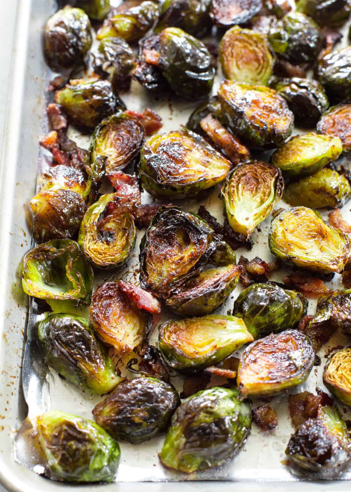

Brussel Sprouts

Description
Brussel sprouts are a highly underrated vegetable and the most delicious in my opinion. Making them is very easy as well
and they can be made in a variety of ways. I will walk you through one of my tried and true methods for making delicious sprouts.
ingredients
- Brussel Sprouts (hopefully obvious)
- Balsamic Vinegar
- Olive oil
- Salt
- Pepper
- Garlic Powder
- Honey (optional)
Steps
- Preheat your oven to 450 degrees farenheit
- Cut the base of the brussels off and cut them in half
- Lie them face up in a pan lined with foil or parchment paper
- Lightly drizzle olive oil over the sprouts, then balsamic vinegar
- Season the sprouts with salt, pepper, and some garlic powder
- Lightly drizzle some honey over the sprouts as desired
- Place your brussels in the oven for 15 minutes
- After 15 minutes, remove from oven and shuffle them around. Then cook for 15 more minutes
- Once your brussels have achieved a dark brown color from baking remove and enjoy (after cooling down a smidge).